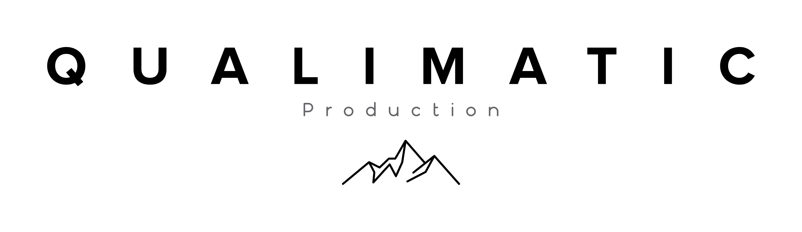

Élégance
3 300 €TTC
Jusqu'au vin d'honneur. Préparatifs, cérémonie, séance couple, drone signature, film 6-8 min, coffret USB bois offert.

La pierre classique et les jardins à la française, aux portes de Paris — par un vidéaste de la Loire.
Mon atelier est en Vallée de la Loire, à deux heures de Versailles. Certains couples franciliens cherchent un regard venu d'ailleurs pour leur mariage : je me déplace volontiers vers l'Île-de-France, où les déplacements restent simples.
Une précision utile d'emblée : on ne se marie pas « dans » le château de Versailles comme on l'imagine. Le château est un musée national. Ce que l'on appelle un mariage à Versailles, c'est la mairie, puis un domaine des Yvelines — et la ville, magnifique, en toile de fond.
Versailles a marqué tout un art du jardin. Le tracé d'André Le Nôtre, les perspectives, les bassins, la rigueur de la pierre classique : c'est une esthétique de la ligne et de la symétrie, qui appelle des plans larges et tenus.
Autour, les Yvelines abritent quantité de domaines et de demeures de cette même veine — orangeries, parcs dessinés, façades XVIIe et XVIIIe. De quoi composer un film élégant sans pousser une seule porte du château.
Devant une architecture aussi ordonnée, je ne chercherais pas à en rajouter. Des cadres droits, de la patience, et la lumière du matin ou de fin de journée qui adoucit la pierre. La symétrie d'un parc à la française se filme presque comme une partition : il suffit de respecter sa mesure.
Pour le reste, ma méthode ne change pas. Double caméra discrète, aucune lumière ajoutée, approche documentaire. Le drone est très encadré en zone dense : je suis télépilote certifié et je ne fais voler qu'avec les autorisations en règle.
Versailles est aux portes de Paris. Le RER C dessert Versailles Château Rive Gauche, et plusieurs trains relient la capitale en une trentaine de minutes ; la gare de Versailles-Chantiers complète la desserte. En voiture, l'A13 met la ville à portée immédiate de Paris.
Mes deux formules s'appliquent partout. Sur l'Île-de-France, les éventuels frais de déplacement restent limités et sont annoncés en amont, au coût réel.
Jusqu'au vin d'honneur. Préparatifs, cérémonie, séance couple, drone signature, film 6-8 min, coffret USB bois offert.
Journée complète. Drone classique + FPV, prise de son pro, teaser 72h, film court + film complet, coffret USB bois offert.